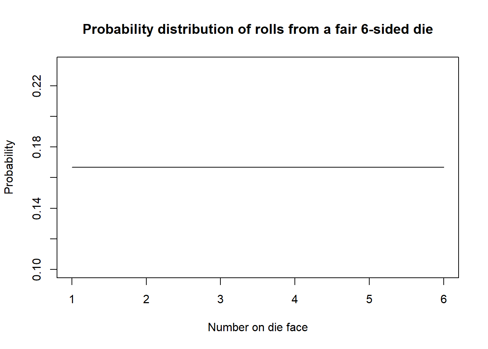
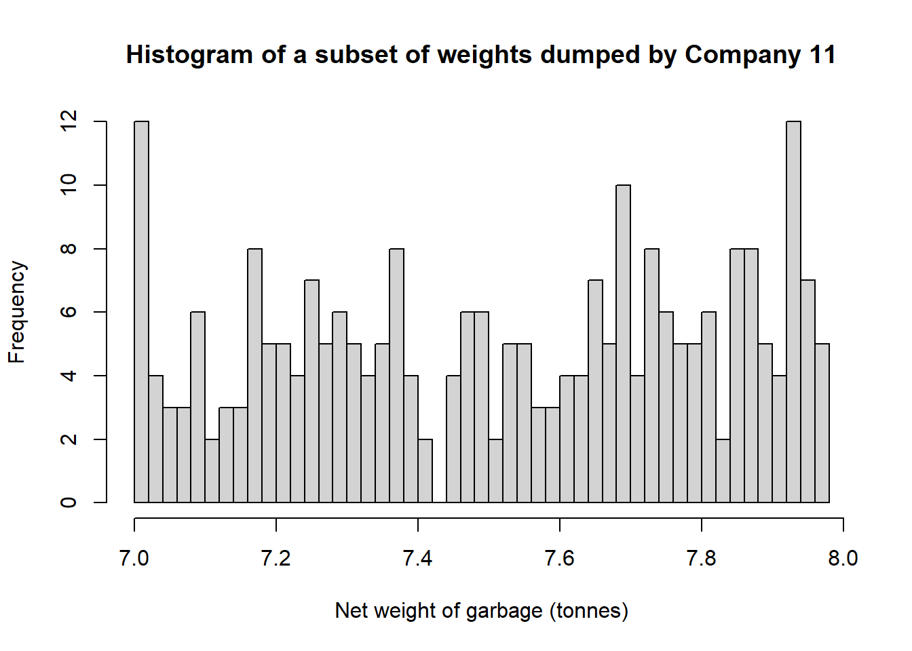

# Example of a uniform distribution
plot(x=c(1:6),y=rep(1/6,6),type="l",
main="Probability distribution of rolls from a fair 6-sided die",
xlab= "Number on die face",
ylab= "Probability")
Disclaimer: This case study and corresponding dataset has been taken from the publicly available RealStat directory published by the Statistical Consulting Centre at the University of Melbourne. I do not claim to own any of the following material.
The Statistical Consulting Centre at the University of Melbourne were commissioned by the Council to determine whether or not a garbage collection company was telling the truth about the faultiness of their weighbridge. Since garbage companies are paid a fee depending on the weight of garbage at the dump, this was a matter of importance.
The garbage collection company alleged that based on testimony from an expert Dr John, their weighbridge was faulty.
For any data distribution, if we were to take a sufficiently small range (“to zoom in” on the data), then the data would appear sufficiently “flat” and approach a uniform distribution.
Each outcome in a uniform distribution (what you’d see on the horizontal axis) has an equal chance of occurring. For example, each number on a fair 6-sided die has a 1/6 chance of being rolled. If we plotted the outcome of the roll (the number) on the x-axis, and the probability of each roll on the y-axis, the resulting graph (a probability mass function) will be a uniform distribution.
# Example of a uniform distribution
plot(x=c(1:6),y=rep(1/6,6),type="l",
main="Probability distribution of rolls from a fair 6-sided die",
xlab= "Number on die face",
ylab= "Probability")
Dr John argued that if we looked at the data from a specific company (company 11), and from that subset, a specific range (from 7 to 8 tonnes), the data would follow a uniform distribution.
Let’s take a look at the data.
library(readxl)
library(tidyverse) df <- read_excel("weighbridge_2-2hss1p1.xlsx")
df_subset <- df %>% filter(Company == 11,
between(`Net weight of garbage (tonnes)`, 7, 7.98),
!is.na(`Net weight of garbage (tonnes)`))
hist(df_subset$`Net weight of garbage (tonnes)`, breaks=50,
main="Histogram of a subset of weights dumped by Company 11",
xlab= "Net weight of garbage (tonnes)",
ylab= "Frequency")
Dr John looked at the weights from 7 to 8 tonnes in steps of 20kg (e.g. 7.02, 7.04, 7.06). Two weights \((7.21, 7.93)\) were removed from the dataset as they do not round to 20kg, which leaves us with 251 individual datapoints.1
df_subset[round(df_subset$`Net weight of garbage (tonnes)` * 100) %% 2 != 0, ]# A tibble: 2 × 2
Company `Net weight of garbage (tonnes)`
<dbl> <dbl>
1 11 7.21
2 11 7.93df_subset <- df_subset %>% filter(`Net weight of garbage (tonnes)` != 7.21 & `Net weight of garbage (tonnes)` != 7.93)
nrow(df_subset)[1] 251Dr John noted that from this subset that he has singled out, there are 12 counts of 5. That is, of the times that Company 11 dumped weights at this weighbridge (in which the net garbage weight fell between 7 and 8 tonnes), twelve individual weights were recorded 5 different times.
df_subset %>%
count(`Net weight of garbage (tonnes)`) %>%
filter(n == 5) %>%
nrow()[1] 12Dr John said this was unusually high, as for a uniform distribution we would expect 8.86.
How did he get this number, and is his conclusion of 12 counts of 5 being unusual, accurate?
Putting aside the validity and the approach of Dr John’s argument, let us first examine his methods.
Since we are expecting the data to follow a uniform distribution, we can perform a goodness-of-fit test to compare our expected values (a uniform distribution of 251 counts among 50 values between 7 and 7.98), to our observed values. The standard test to use in this case is the chi-squared goodness-of-fit test.
# Expected counts: 251*1/50=5.02 each
test_table <- df_subset %>%
group_by(`Net weight of garbage (tonnes)`) %>%
summarise(observed = n(), .groups = "drop") %>%
complete(
`Net weight of garbage (tonnes)` = seq(
700, 798, by = 2) / 100,
fill = list(observed = 0)
) %>%
mutate(expected = 251/50)
test_table# A tibble: 50 × 3
`Net weight of garbage (tonnes)` observed expected
<dbl> <int> <dbl>
1 7 5 5.02
2 7.02 7 5.02
3 7.04 4 5.02
4 7.06 3 5.02
5 7.08 3 5.02
6 7.1 6 5.02
7 7.12 2 5.02
8 7.14 3 5.02
9 7.16 3 5.02
10 7.18 8 5.02
# ℹ 40 more rowschisq.test(x = test_table$observed, p = test_table$expected/251)
Chi-squared test for given probabilities
data: test_table$observed
X-squared = 44.418, df = 49, p-value = 0.6591What does this tell us? Well, we know that the p-value of \(0.66\) is the probability of observing a value at least as extreme as what we observed, if our assumption of the data following a uniform distribution was true. This is quite a high probability, which reflects perhaps that our data is not very extreme at all.
We may also recall that the mean of the chi-squared distribution is equal to its degrees of freedom. In this case, we have 49 degrees of freedom, and it’s intuitive to reason that an observed value of 44.42 is not that extreme when compared to the mean of 49 after all.
This calls into question Dr John’s claim that our observed data is “unusual” when comparing to what’s expected from a uniform distribution.
Earlier, Dr John said that the number of counts of 5 we should expect to have seen, assuming the data followed a uniform distribution, was 8.89. Considering he did not back up his reasoning, where could he have possibly gotten this value from?
The exclusion of those two values can be argued. However, ultimately it is the removal of 2 out of 253 datapoints, and so we can infer that the impact of removing them wouldn’t be too large.↩︎